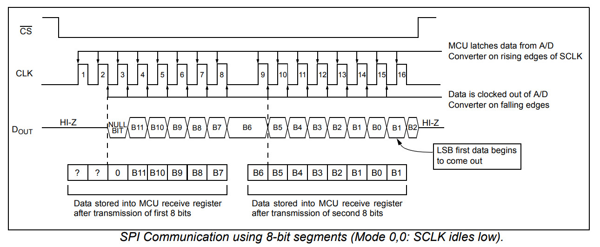

การใช้งานไอซี MCP3201 SPI ADC#
บทความนี้กล่าวถึง ตัวอย่างการใช้งานไอซี MCP3201 ADC ในเบื้องต้น โดยใช้งานร่วมกับบอร์ดไมโครคอนโทรลเลอร์ และเขียนโปรแกรมด้วย Arduino Sketch เพื่อวัดค่าสัญญาณแอนะล็อก จำนวน 1 ช่องสัญญาณ
Keywords: MCP3201, Analog-to-Digital Converter (ADC), SPI Bus, Arduino Sketch, Arduino Uno R4, RA4M1, ESP32
▷ Microchip MCP3201#
MCP3201 เป็นไอซีที่มีวงจรแปลงสัญญาณแอนะล็อกเป็นดิจิทัล (Analog-to-Digital Converter: ADC) และรองรับการสื่อสารแบบ SPI (Serial Peripheral Interface) ไอซีเบอร์นี้มีช่องรับสัญญาณแอนะล็อกหนึ่งช่อง และใช้แรงดันไฟเลี้ยงในช่วง 2.7V ถึง 5.5V นอกจากนี้ยังมีความละเอียดสูงถึง 12 บิต ทำให้สามารถแปลงสัญญาณแบ่งได้ 4096 ระดับ (มีค่าตัวเลขในช่วง 0..4095)
ขาของไอซี MCP3201 มีดังนี้
- VDD (Voltage Supply): เป็นขาไฟเลี้ยง
- VSS (Ground): เป็นขาสัญญาณกราวด์ (GND) ของไอซี ซึ่งต้องต่อร่วมกับกราวด์ของระบบ
- VIN+ (Analog Input Positive): เป็นขาสัญญาณแอนะล็อกอินพุตสำหรับรับสัญญาณอินพุต และรับแรงดันได้ในช่วง 0V ถึง VREF
- VIN- (Analog Input Negative): เป็นขาที่ใช้เป็นแรงดันอ้างอิงของสัญญาณอินพุต โดยทั่วไปจะต่อกับ VSS
- DOUT (Data Out): เป็นขาเอาต์พุตสำหรับส่งข้อมูลดิจิทัลแบบ SPI
- /CS (Chip Select): เป็นขาสัญญาณควบคุมการเริ่มต้นการสื่อสาร SPI ทำงานแบบ Active-Low
- SCK (Serial Clock): เป็นขาสัญญาณนาฬิกาที่ใช้ควบคุมจังหวะการส่งข้อมูลระหว่างไอซีกับไมโครคอนโทรลเลอร์
รูป: บล็อกไดอะแกรม ตัวถังและตำแหน่งขาของไอซี MCP3201
ความเร็วในการแปลงข้อมูล (Sampling Rate) ของไอซี:
- 100 ksps (VDD=5V) และ 50 ksps (VDD=2.7V)
ความถี่สูงสุดสำหรับ SCK:
- 1.6MHz (VDD=5V) และ 0.8MHz (VDD=2.7V)
การแปลงสัญญาณของ MCP3201 ใช้เทคนิคที่เรียกว่า Successive Approximation Register (SAR) ซึ่งเป็นวิธีการแปลงที่พบได้ทั่วไปสำหรับไอซี ADC โดยทั่วไปแล้ว ขั้นตอนการแปลงเริ่มต้นจากการเก็บค่าสัญญาณแอนะล็อก ที่ผ่านเข้ามายังวงจร Sample & Hold (S/H) ซึ่งทำให้มีค่าคงที่ก่อนทำขั้นตอน ADC จากนั้นวงจร SAR จะเปรียบเทียบแรงดันแอนะล็อกอินพุตกับแรงดันที่สร้างขึ้นโดยวงจร DAC โดยเริ่มจากการกำหนดค่าบิตสูงสุดก่อน (MSB) แล้วปรับบิตแต่ละบิตจากบิตสูงสุดไปยังบิตต่ำสุด (LSB)
ในแต่ละครั้งของการเปรียบเทียบ ค่าบิตในรีจิสเตอร์จะถูกปรับตามผลของการเปรียบเทียบ จนได้ค่าที่เข้าใกล้แรงดันอินพุต ดังนั้นในความละเอียด 12 บิต จะมีการเปรียบเทียบทั้งหมด 12 ครั้ง หรือตามจังหวะสัญญาณ Clock ทั้งหมด 12 ไซเคิล

รูป: การสื่อสารข้อมูลด้วยบัส SPI ในโหมด (0,0)
จากรูปสัญญาณ Timing Diagram ของ MCP3201 เมื่อได้เลื่อนบิต 16 บิต แล้ว ซึ่งเป็นข้อมูลที่ถูกส่งออกมาทางขา DOUT จำเป็นต้องทำการดึงเฉพาะ 12 บิตที่เป็นข้อมูลที่แท้จริงจาก ADC ดังนั้นจะต้องเลื่อนบิตไปทงาขวา 1 บิต แล้วจึงจะได้ข้อมูล 12 บิต (11 – 0) เป็นค่าที่ถูกต้อง
▷ ตัวอย่างการเขียนโค้ด: Arduino Uno R4 WiFi#
ถัดไปเป็นตัวอย่างโค้ด Arduino Sketch สำหรับบอร์ด Arduino Uno R4
โดยเปิดใช้งานวงจรตัวนับ (Hardware Timer) และใช้คำสั่งจากคลาส FspTimer
เพื่อสร้างอินเทอร์รัพท์ที่อัตราคงที่ 20kHz
ซึ่งจะใช้เป็นอัตราการชักตัวอย่างสัญญาณแอนะล็อกจากอินพุตของไอซี MCP3201
ข้อมูลที่ได้จากการชักตัวอย่าง มีขนาด 12 บิต แต่เก็บอยู่ในข้อมูลตามรูปแบบ 16-bit Unsigned
และนำไปใส่ลงในบัฟเฟอร์ขนาด 1024 ค่า (BUF_SIZE)
เมื่อบันทึกข้อมูลได้ตามจำนวนที่ต้องการแล้ว ก็เซตค่าลอจิกของตัวแปร done ให้เป็น 1
และหยุดการบันทึกค่าชั่วคราว จนกว่าจะมีการเคลียร์ค่าของ done
ข้อมูลที่ถูกเก็บไว้ในอาร์เรย์ buffer จะถูกส่งไปยังคอมพิวเตอร์ผ่านทาง Serial
และนำไปแสดงผลเป็นรูปกราฟสัญญาณใน Arduino Serial Plotter
การใช้งานวงจร SPI ก็ทำได้ง่าย โดยใช้ฟังก์ชันของคลาส SPI มีการกำหนดความเร็วในการรับส่งข้อมูลด้วยบัส
SPI ไว้เท่ากับ 1MHz และจะทำงานในโหมด (0,0)
#include <SPI.h>
#include <FspTimer.h> // Use the FspTimer class
#define TICK_RATE (20e3)
#define VREF (4720UL) // voltage reference in mV
#define CS_PIN (10) // Chip select pin (active-low)
#define BUF_SIZE (1024) // Number of samples
uint16_t buffer[BUF_SIZE] = {0}; // Buffer to store ADC samples
uint16_t sampleCount = 0; // Counter to keep track of samples
volatile boolean done = false; // Done flag for ADC sampling
FspTimer timer; // GPT Timer
// Function to read a 12-bit value from MCP3201 via SPI
uint16_t readADC() {
uint16_t value = 0;
SPI.beginTransaction( SPISettings(1000000, MSBFIRST, SPI_MODE0) );
// Select MCP3201 by setting CS low
digitalWrite( CS_PIN, LOW );
value = SPI.transfer16( 0x0000 ); // Read high byte
// Release MCP3201 by setting CS high
digitalWrite( CS_PIN, HIGH );
SPI.endTransaction();
return (value >> 1) & 0x0FFF;
}
// Timer callback function
void timerCallback(timer_callback_args_t __attribute__((unused)) *p_args) {
uint16_t value = readADC(); // read the ADC value
// If not done, write value into buffer and increment sample count
if (!done) {
buffer[sampleCount++] = value;
// If buffer is full, set done flag
if (sampleCount == BUF_SIZE) {
done = true;
}
}
}
// Initialize the timer for periodic sampling
void timerInit() {
timer_mode_t timer_mode = TIMER_MODE_PERIODIC;
uint8_t timer_type = GPT_TIMER;
float timer_freq_hz = TICK_RATE; // Timer tick rate
int timer_index = FspTimer::get_available_timer(timer_type);
if (timer_index < 0) {
timer_index = FspTimer::get_available_timer(timer_type, true);
}
if (timer_index >= 0) {
timer.begin(timer_mode, timer_type, timer_index,
timer_freq_hz, 0.0, timerCallback, nullptr);
timer.setup_overflow_irq();
timer.open();
timer.start();
}
}
void setup() {
Serial.begin(115200);
pinMode( CS_PIN, OUTPUT );
digitalWrite( CS_PIN, HIGH );
SPI.begin(); // Initialize SPI
timerInit(); // Initialize Timer
}
void loop() {
// If done flag is set, send all samples in buffer to serial
if (done) {
for (int i=0; i < BUF_SIZE; i++) {
Serial.println( String(" mV:") + VREF*buffer[i]/4096);
}
Serial.flush();
// Clear done flag and reset sample count
done = false;
sampleCount = 0;
}
}
ในการทดลองได้เลือกใช้โมดูลไมโครโฟนเสียงแบบแอนะล็อก MAX4466 (ใช้แรงดันไฟเลี้ยง +5V) เพื่อสร้างสัญญาณอินพุตให้กับไอซี MCP3201 สัญญาณเสียงได้จากคลิปเสียงคลื่นไซน์ ความถี่ 1kHz
รูป: การต่อวงจรบนเบรดบอร์ด เพื่อใช้งานกับบอร์ด Uno R4 Wi-Fi
รูป: ตัวอย่างรูปกราฟเมื่อแสดงผลข้อมูลใน Arduino Serial Plotter ซึ่งมองเห็นเป็นรูปไซน์
ตัวอย่างการวัดสัญญาณจากโมดูลไมโครโฟนด้วยออสซิลโลสโคป มีดังนี้
รูป: สัญญาณแอนะล็อกจากโมดูลไมโครโฟนเสียง (แสดงผลในโหมด DC Coupling) และสัญญาณมีค่า DC Offect ประมาณ 1.2V
รูป: สัญญาณแอนะล็อกจากโมดูลไมโครโฟนเสียง (แสดงผลในโหมด AC Coupling)
รูป: สเปกตรัมเชิงความถี่ของสัญญาณแอนะล็อกจากโมดูลไมโครโฟนเสียง
จากสเปกตรัมเชิงความถี่ของสัญญาณ จะเห็นได้ว่า กราฟมีค่าสูงสุดอยู่ที่ความถี่ 1kHz
ถัดไปเป็นตัวอย่างการวัดสัญญาณของบัส SPI: ช่อง CH1 คือ สัญญาณ /CS และ
ช่อง CH2 คือ สัญญาณ SCK ตามลำดับ และจะเห็นได้ว่า
ในกรณีนี้ SCK มีความถี่ 1MHz และอัตราการชักตัวอย่าง (Fs) เท่ากับ 20kHz
มีช่วงเวลาการสื่อสารผ่านบัส SPI (ช่วงที่ /CS เป็นลอจิก 0) ประมาณ 21.5 us
รูป: ตัวอย่างคลื่นสัญญาณที่วัดได้สำหรับ /CS และ SCK
▷ ตัวอย่างการเขียนโค้ด: Arduino ESP32#
ถัดไปเป็นตัวอย่างโค้ด Arduino Sketch สำหรับบอร์ดไมโครคอนโทรลเลอร์ ESP32 ซึ่งจะแตกต่างจากโค้ดตัวอย่างที่แล้วสำหรับ Arduino Uno R4 ในบางส่วน เช่น
- การใช้งานวงจรตัวนับ (Hardware Timer) ซึ่งดูได้จากฟังก์ชัน
timerInit(...)ที่แตกต่างออกไป - การเลือกใช้ขา GPIO ของ ESP32 สำหรับ SPI
ในตัวอย่างนี้ได้เลือกใช้ VSPI ซึ่งมีการใช้งาน GPIO สำหรับบัส SPI ดังนี้
MOSI=23,MISO=19,SCLK=18,CS=5
#include <SPI.h>
#define TICK_RATE (20e3)
#define TIMER_FREQ_HZ (1e6)
#define PERIOD_TICKS ((uint32_t)(TIMER_FREQ_HZ/TICK_RATE))
#define VREF (3311UL) // voltage reference in mV
#define CS_PIN (5) // Chip select pin (active-low)
#define BUF_SIZE (1024) // Number of samples
uint16_t buffer[BUF_SIZE] = {0}; // Buffer to store ADC samples
uint16_t sampleCount = 0; // Counter to keep track of samples
volatile boolean done = false; // Done flag for ADC sampling
hw_timer_t *timer = NULL; // Timer handle
// Function to read a 12-bit value from MCP3201 via SPI
uint16_t readADC() {
uint16_t value = 0;
SPI.beginTransaction( SPISettings(1000000, MSBFIRST, SPI_MODE0) );
// Select MCP3201 by setting CS low
digitalWrite( CS_PIN, LOW );
value = SPI.transfer16(0x0000); // Read high byte
// Release MCP3201 by setting CS high
digitalWrite( CS_PIN, HIGH );
SPI.endTransaction();
return (value >> 1) & 0x0FFF;
}
// Timer interrupt callback function
void IRAM_ATTR timerCallback() {
uint16_t value = readADC(); // read the ADC value
digitalWrite( LED_BUILTIN, HIGH );
// If not done, write value into buffer and increment sample count
if (!done) {
buffer[sampleCount++] = value;
// If buffer is full, set done flag
if (sampleCount == BUF_SIZE) {
done = true;
}
}
digitalWrite( LED_BUILTIN, LOW );
}
// Initialize the timer for periodic sampling
void timerInit() {
timer = timerBegin( TIMER_FREQ_HZ );
if (timer == NULL){
Serial.println("Timer init failed!!");
}
timerStop( timer );
timerAlarm( timer, PERIOD_TICKS /*period (ticks)*/,
true /*autoreload*/, 0 /*autoreload count*/ );
timerAttachInterrupt( timer, &timerCallback );
timerStart( timer );
}
void setup() {
Serial.begin(115200);
pinMode( LED_BUILTIN, OUTPUT );
pinMode( CS_PIN, OUTPUT );
digitalWrite( CS_PIN, HIGH );
// Uses default VSPI pins: MOSI=23, MISO=19, SCLK=18, and CS=5
SPI.begin(); // Initialize VSPI
timerInit(); // Initialze Timer
}
void loop() {
// If done flag is set, send all samples in buffer to serial
if (done) {
for (int i=0; i < BUF_SIZE; i++) {
Serial.println( String(" mV:") + VREF*buffer[i]/4096);
}
Serial.flush();
// Clear done flag and reset sample count
done = false;
sampleCount = 0;
}
}
เมื่อนำโค้ดตัวอย่างนี้ไปทดลองกับบอร์ด ESP32 (WeMos Lolin32 Lite) และวัดสัญญาณด้วยออสซิลโลโคป จะได้คลื่นสัญญาณตามตัวอย่างดังนี้
รูป: สัญญาณ CH1: /CS และ CH2: SCK
รูป: การแสดงผลข้อมูลจากการอ่านค่า ADC โดยใช้ Arduino Serial Plotter
▷ กล่าวสรุป#
บทความนี้นำเสนอตัวอย่างการเขียนโค้ด Arduino สำหรับบอร์ด Arduino Uno R4 และ ESP32 (WeMos Lolin32 Lite) และต่อวงจรใช้งานร่วมกับไอซี MCP3201 SPI ADC เพื่ออ่านค่าสัญญาณแอนะล็อกหนึ่งช่องสัญญาณ
บทความที่เกี่ยวข้อง
- การใช้งานบอร์ด Arduino Uno R4 WiFi ในเบื้องต้น
- การใช้บอร์ด Arduino เลียนแบบการทำงานของวงจร Successive Approximation ADC
This work is licensed under a Creative Commons Attribution-ShareAlike 4.0 International License.
Created: 2024-11-14 | Last Updated: 2024-11-14